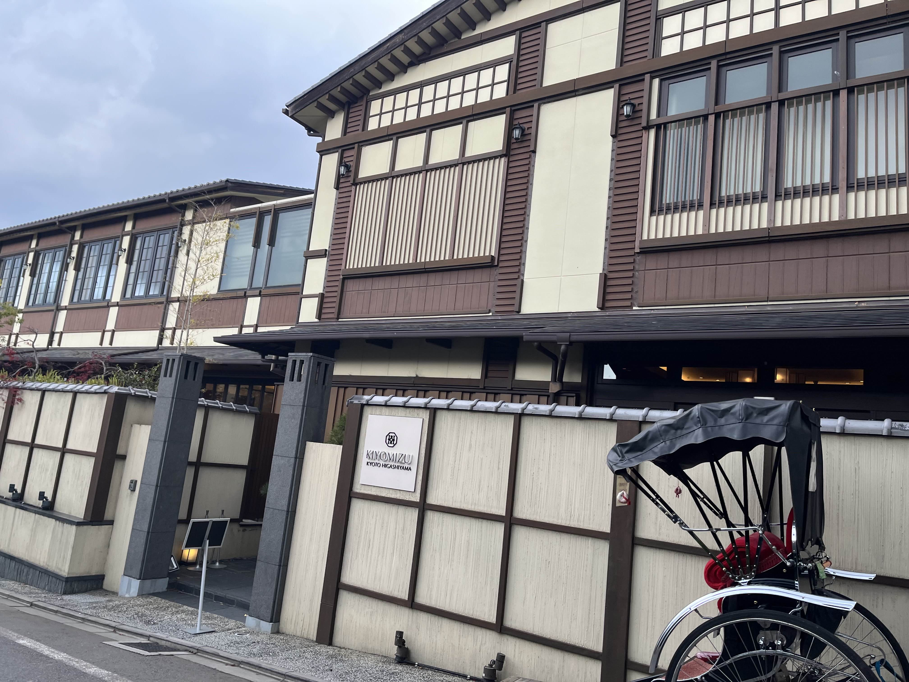
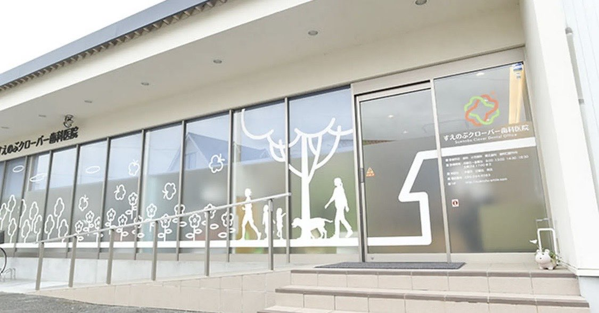

路上観察
- 
- 京都の結婚式場 高校の修学旅行の際にきれいだなと思い、自分で撮った結婚式場の写真。結婚式場とは看板のどこにも書かれて
- 通っていた歯医者 実家に住んでいた時に通っていた歯医者の窓のデザインがきれいだったので選んだ。看板自体は上にあるが歯医
- 住宅街のすし屋 実家の近くの住宅街にぽつんと建っているすし屋の看板。テント看板になっている。住所や電話番号が書いてあ
おらず、式場の名前と地名が書いてある。街並みの雰囲気にはマッチしていた。

者に通うことで暮らしが豊かになることを窓のデザインから感じ取ることが出来る。

る昔ながらのデザインになっている。なぜ住宅街にあるのにつぶれないのかずっと気になっている。